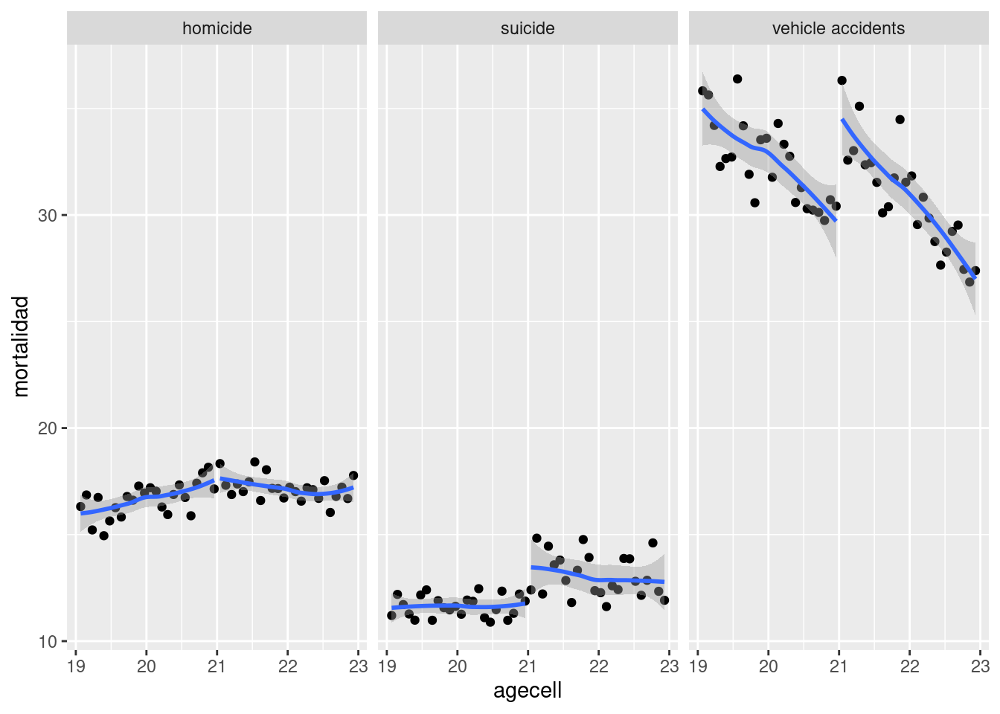

library(tidyverse)
library(DiagrammeR)
library(kableExtra)10 Otros métodos para inferencia causal
En esta última parte veremos dos métodos que se basan en características particulares del supuesto proceso generador de datos o diagrama causal, que los hacen en algunos aspectos similares a conducir un experimento aleatorizado.
Estos métodos requieren supuestos fuertes, no son de aplicabilidad general, pero es menos crítico construir un diagrama causal apropiado.
10.1 Intro: Variables instrumentales
En el siglo XIX John Snow tenía la teoría de que algo en la calidad del suministro de agua estaba relacionado con la aparición de casos de cólera en Londres (que entonces era una epidemia).
Reconoció que tenía el problema de variables no observadas que abren puertas traseras: la calidad de agua que toman las personas (o por ejemplo en zonas de la ciudad) es diferente: en zonas más pobres en general la calidad del agua es mala, y también hay más muertes de cólera en lugares pobres.
Otra variable de confusión podía ser el entonces llamado “miasma”: cosas malas en el aire que contaminan el agua y a las personas.
Código
grViz("
digraph {
graph [ranksep = 0.2]
node [shape = circle]
MiasmaPobreza
node [shape=plaintext]
edge [minlen = 3]
PurezaAgua -> Colera
MiasmaPobreza -> Colera
MiasmaPobreza -> PurezaAgua
{rank = same; PurezaAgua; Colera}
}
", width = 200, height = 100)Dado este diagrama, como hemos discutido, no podemos identificar el efecto causal de la calidad de suministro de agua en las muertes o infecciones de cólera: podría ser la “miasma” que contamina el agua y enferma a las personas (correlación no causal), por ejemplo, y no hay relación causal entre tomar agua contaminada y cólera.
John Snow, sin embargo, que no creía en la teoría del miasma, investigó con detalle de dónde provenía el agua que tomaban en varias casas a lo largo de toda la ciudad. Lo que descubrió, en sus palabras es que:
- En grandes partes de Londres, los suministros de agua de distintas compañías están organizados de forma compleja. Los tubos de cada compañía van por todas las calles de todas las zonas.
- La decisión de qué compañía suministraba a cada casa generalmente se había tomado hace mucho, y los habitantes generalmente no lo decidían ni sabían que compañía de agua les correspondía.
- Había casas muy cercanas, unas con una compañía y otras con otra.
Si las distintas compañías de agua tiene distintos niveles de calidad de agua, podriamos expandir nuestro DAG a:
Código
grViz("
digraph {
graph [ranksep = 0.2]
node [shape = circle]
Miasma
node [shape=plaintext]
edge [minlen = 3]
Comp -> PurezaAgua -> Colera
Miasma -> PurezaAgua
Miasma -> Colera
{rank = same; Comp; PurezaAgua; Colera}
}
")Tenemos entonces:
- La compañía que suministra a cada casa o zona es causa de la pureza de agua en cada casa.
- No puede haber aristas directas entre compañía y cólera: el único efecto de compañía en cólera puede ser a través del agua que suministra.
- No puede haber una arista de Miasma/Pobreza a Compañía, por la observación de Snow: la decisión de qué compañía suministraba a qué casa se había tomado mucho antes, y no tenía relación con pobreza, miasma actual ni cólera (que no existía cuando se tomaron esas decisiones)
La conclusión de Snow es que desde el punto de vista de cólera y el sistema que nos interesa, la compañía de agua se comporta como si fuera asignada al azar: no hay ninguna variable relevente al problema que incida en qué compañía abastece a cada casa o zona. Como observó asociación entre compañía de agua y Cólera, concluyó correctamente que esto implicaba que la pureza del agua tenía un efecto causal en la propagación del cólera.
La idea de Snow entonces podemas :
- Por la gráfica, la asociación entre Compañía y Cólera es causal (no hay confusoras para Compañía y Cólera).
- Si esta relación existe, entonces por los supuestos, la Pureza de Agua tiene un efecto causal sobre Cólera.
La tabla de Snow, tomada de Freedman (1991):
tibble(comp = c("Southwark+Vauxhall", "Lambeth", "Resto"),
casas = c(40046, 26107, 256423),
muertes_colera = c(1263, 98, 1422),
tasa_muertes_10milcasas = c(315, 37, 59)) |>
knitr::kable() |> kable_paper()| comp | casas | muertes_colera | tasa_muertes_10milcasas |
|---|---|---|---|
| Southwark+Vauxhall | 40046 | 1263 | 315 |
| Lambeth | 26107 | 98 | 37 |
| Resto | 256423 | 1422 | 59 |
Esta diferencia grande muestra que la razón de la aparición de cólera tenía que ver con el agua que consumían las personas, considerando los supuestos de arriba. Para llegar a la conclusión de Snow, es necesario que se cumpla la estructura causal del diagrama de arriba.
10.2 Variables instrumentales
El diagrama básico que define una variable instrumental con el propósito de identificar el efecto causal de \(T\) sobre \(Y\) es el siguiente:
Código
grViz("
digraph {
graph [ranksep = 0.2]
node [shape = circle]
U
node [shape=plaintext]
edge [minlen = 3]
Z -> T -> Y
U-> T
U-> Y
{rank = same; Z;T; Y}
}
", width= 200, height = 70)
Variables instrumentales
Decimos que \(Z\) es una variable instrumental para estimar el efecto causal de \(T\) sobre \(Y\) cuando:
- \(Z\) es una variable que influye en la asignación del tratamiento.
- \(Z\) está \(d\)-separada de \(U\).
- \(Z\) sólo influye en \(Y\) a través de \(T\) (restricción de exclusión)
- Generalmente las últimas dos de estas hipótesis tienen que postularse basadas en conocimiento experto, ya que no es posible checarlas con datos.
- Con estrategias de condicionamiento es posible encontrar instrumentos potenciales en gráficas más complejas.
- Esta estrategia funciona con modelos lineales. Más generalmente, pero bajo ciertos supuestos, los estimadores de variables instrumentales son más propiamente estimadores de un cierto tipo de efecto causal (por ejemplo, para tratamientos binarios, el efecto causal sobre los compliers, ver Morgan y Winship (2015)).
10.3 Estimación con variables instrumentales
La estimación de efectos causales con variables instrumentales depende de supuestos adicionales a los del cálculo-do, y su utilidad depende de qué tan fuerte es el instrumento (qué tan correlacionado está con el tratamiento).
Primero, hacemos una discusión para ver cómo esto puede funcionar. Lo más importante es notar que el efecto de \(Z\) sobre \(Y\) y el de \(Z\) sobre \(T\) son identificables y podemos calcularlos. El que nos interesa el efecto de \(T\) sobre \(Y\). Supongamos que todos los modelos son lineales:
- Supongamos que cuando \(Z\) aumenta una unidad, \(T\) aumenta en \(a\) unidades,
- Supongamos que cuando \(T\) aumenta 1 unidad \(Y\) aumenta \(b\) unidades (este es el efecto causal que queremos calcular).
- Esto quiere decir que cuando \(Z\) aumenta una unidad, \(Y\) aumenta \(c = ab\) unidades.
- El efecto causal de \(T\) sobre \(Y\) se puede calcular dividiendo \(c/a\) (que es igual a \(b\)), y estas dos cantidades están identificadas
Nótese que si \(a=0\), o es muy chico, este argumento no funciona (\(Z\) es un instrumento débil).
Veremos un ejemplo simulado, y cómo construir un estimador estadístico en el caso lineal para estimar el efecto causal.
sim_colera <- function(n){
# se selecciona al azar la compañía
comp <- sample(1:5, n, replace = TRUE)
contaminacion_comp <- c(5, 5, 0.3, 0.2, 0)
# confusor
u <- rnorm(n, 0, 1)
# confusor afecta a pureza y muertes
pureza <- rnorm(n, contaminacion_comp[comp] + 2 * u, 1)
colera <- rnorm(n, 3 * pureza + 2 * u, 1)
tibble(comp, pureza, colera)
}
set.seed(800)
datos_tbl <- sim_colera(1000)datos_tbl |> head()# A tibble: 6 × 3
comp pureza colera
<int> <dbl> <dbl>
1 3 -0.569 -3.73
2 3 2.89 10.3
3 2 3.59 9.26
4 2 4.59 12.4
5 4 -0.744 -2.88
6 4 -4.23 -17.9 Podríamos construir un modelo generativo modelando una variable latente \(U\). Si embargo, es más simple definir un modelo estadístico como sigue:
- Las variables pureza son normales bivariadas con alguna correlación (producida por el confusor U).
- La media de Pureza depende la compañía (modelo de primera etapa)
- La media de Cólera depende de la pureza (modelo de segunda etapa)
Con un modelo así podemos resolver el problema de estimar el efecto causal la variable instrumental.
Sin embargo, modelos de regresión simples no nos dan la respuesta correcta. Por ejemplo, sabemos que esta regresión es incorrecta (por el confusor):
lm(colera~ pureza, datos_tbl) |> broom::tidy()# A tibble: 2 × 5
term estimate std.error statistic p.value
<chr> <dbl> <dbl> <dbl> <dbl>
1 (Intercept) -0.739 0.0702 -10.5 1.27e-24
2 pureza 3.38 0.0184 184. 0 lm(colera ~ pureza + factor(comp), datos_tbl) |> broom::tidy()# A tibble: 6 × 5
term estimate std.error statistic p.value
<chr> <dbl> <dbl> <dbl> <dbl>
1 (Intercept) -4.02 0.137 -29.4 6.92e-137
2 pureza 3.80 0.0187 203. 0
3 factor(comp)2 0.0447 0.139 0.322 7.47e- 1
4 factor(comp)3 3.77 0.162 23.2 7.99e- 96
5 factor(comp)4 3.92 0.164 23.9 4.03e-100
6 factor(comp)5 4.14 0.166 24.9 5.35e-107Y agregar la variable compañía empeora la situación. La razón es que al condicionar a pureza, abrimos un nuevo camino no causal entre compañía y la respuesta, y esta es capturada por esos coeficientes.
library(cmdstanr)This is cmdstanr version 0.7.1- CmdStanR documentation and vignettes: mc-stan.org/cmdstanr- CmdStan path: /home/runner/.cmdstan/cmdstan-2.34.0- CmdStan version: 2.34.0
A newer version of CmdStan is available. See ?install_cmdstan() to install it.
To disable this check set option or environment variable CMDSTANR_NO_VER_CHECK=TRUE.mod_colera <- cmdstan_model("./src/iv-ejemplo.stan")
print(mod_colera)data {
int<lower=0> N;
array[N] int compania;
vector[N] colera;
vector[N] pureza;
}
transformed data {
array[N] vector[2] py;
for(i in 1:N){
py[i][1] = pureza[i];
py[i][2] = colera[i];
}
}
parameters {
vector[6] alpha;
real alpha_0;
real beta_0;
real beta_1;
corr_matrix[2] Omega;
vector<lower=0>[2] sigma;
}
transformed parameters{
array[N] vector[2] media;
cov_matrix[2] S;
for(i in 1:N){
media[i][2] = beta_0 + beta_1 * pureza[i];
media[i][1] = alpha_0 + alpha[compania[i]];
}
S = quad_form_diag(Omega, sigma);
}
model {
py ~ multi_normal(media, S);
Omega ~ lkj_corr(2);
sigma ~ normal(0, 10);
alpha_0 ~ normal(0, 1);
beta_0 ~ normal(0, 1);
beta_1 ~ normal(0, 1);
alpha ~ normal(0, 300);
}
generated quantities{
}ajuste <- mod_colera$sample(
data = list(N = nrow(datos_tbl),
compania = datos_tbl$comp,
colera = datos_tbl$colera,
pureza = datos_tbl$pureza),
init = 0.01, step_size = 0.01,
parallel_chains = 4, iter_warmup = 500, iter_sampling = 1000
)Running MCMC with 4 parallel chains...
Chain 1 Iteration: 1 / 1500 [ 0%] (Warmup)
Chain 2 Iteration: 1 / 1500 [ 0%] (Warmup)
Chain 3 Iteration: 1 / 1500 [ 0%] (Warmup)
Chain 4 Iteration: 1 / 1500 [ 0%] (Warmup)
Chain 4 Iteration: 100 / 1500 [ 6%] (Warmup)
Chain 1 Iteration: 100 / 1500 [ 6%] (Warmup)
Chain 2 Iteration: 100 / 1500 [ 6%] (Warmup)
Chain 3 Iteration: 100 / 1500 [ 6%] (Warmup)
Chain 1 Iteration: 200 / 1500 [ 13%] (Warmup)
Chain 4 Iteration: 200 / 1500 [ 13%] (Warmup)
Chain 2 Iteration: 200 / 1500 [ 13%] (Warmup)
Chain 3 Iteration: 200 / 1500 [ 13%] (Warmup)
Chain 4 Iteration: 300 / 1500 [ 20%] (Warmup)
Chain 1 Iteration: 300 / 1500 [ 20%] (Warmup)
Chain 2 Iteration: 300 / 1500 [ 20%] (Warmup)
Chain 3 Iteration: 300 / 1500 [ 20%] (Warmup)
Chain 4 Iteration: 400 / 1500 [ 26%] (Warmup)
Chain 1 Iteration: 400 / 1500 [ 26%] (Warmup)
Chain 2 Iteration: 400 / 1500 [ 26%] (Warmup)
Chain 3 Iteration: 400 / 1500 [ 26%] (Warmup)
Chain 4 Iteration: 500 / 1500 [ 33%] (Warmup)
Chain 4 Iteration: 501 / 1500 [ 33%] (Sampling)
Chain 1 Iteration: 500 / 1500 [ 33%] (Warmup)
Chain 1 Iteration: 501 / 1500 [ 33%] (Sampling)
Chain 2 Iteration: 500 / 1500 [ 33%] (Warmup)
Chain 2 Iteration: 501 / 1500 [ 33%] (Sampling)
Chain 3 Iteration: 500 / 1500 [ 33%] (Warmup)
Chain 3 Iteration: 501 / 1500 [ 33%] (Sampling)
Chain 4 Iteration: 600 / 1500 [ 40%] (Sampling)
Chain 1 Iteration: 600 / 1500 [ 40%] (Sampling)
Chain 2 Iteration: 600 / 1500 [ 40%] (Sampling)
Chain 3 Iteration: 600 / 1500 [ 40%] (Sampling)
Chain 4 Iteration: 700 / 1500 [ 46%] (Sampling)
Chain 1 Iteration: 700 / 1500 [ 46%] (Sampling)
Chain 2 Iteration: 700 / 1500 [ 46%] (Sampling)
Chain 3 Iteration: 700 / 1500 [ 46%] (Sampling)
Chain 4 Iteration: 800 / 1500 [ 53%] (Sampling)
Chain 1 Iteration: 800 / 1500 [ 53%] (Sampling)
Chain 2 Iteration: 800 / 1500 [ 53%] (Sampling)
Chain 3 Iteration: 800 / 1500 [ 53%] (Sampling)
Chain 4 Iteration: 900 / 1500 [ 60%] (Sampling)
Chain 1 Iteration: 900 / 1500 [ 60%] (Sampling)
Chain 3 Iteration: 900 / 1500 [ 60%] (Sampling)
Chain 2 Iteration: 900 / 1500 [ 60%] (Sampling)
Chain 1 Iteration: 1000 / 1500 [ 66%] (Sampling)
Chain 4 Iteration: 1000 / 1500 [ 66%] (Sampling)
Chain 3 Iteration: 1000 / 1500 [ 66%] (Sampling)
Chain 2 Iteration: 1000 / 1500 [ 66%] (Sampling)
Chain 1 Iteration: 1100 / 1500 [ 73%] (Sampling)
Chain 4 Iteration: 1100 / 1500 [ 73%] (Sampling)
Chain 3 Iteration: 1100 / 1500 [ 73%] (Sampling)
Chain 2 Iteration: 1100 / 1500 [ 73%] (Sampling)
Chain 1 Iteration: 1200 / 1500 [ 80%] (Sampling)
Chain 4 Iteration: 1200 / 1500 [ 80%] (Sampling)
Chain 3 Iteration: 1200 / 1500 [ 80%] (Sampling)
Chain 2 Iteration: 1200 / 1500 [ 80%] (Sampling)
Chain 1 Iteration: 1300 / 1500 [ 86%] (Sampling)
Chain 4 Iteration: 1300 / 1500 [ 86%] (Sampling)
Chain 3 Iteration: 1300 / 1500 [ 86%] (Sampling)
Chain 2 Iteration: 1300 / 1500 [ 86%] (Sampling)
Chain 1 Iteration: 1400 / 1500 [ 93%] (Sampling)
Chain 4 Iteration: 1400 / 1500 [ 93%] (Sampling)
Chain 3 Iteration: 1400 / 1500 [ 93%] (Sampling)
Chain 2 Iteration: 1400 / 1500 [ 93%] (Sampling)
Chain 1 Iteration: 1500 / 1500 [100%] (Sampling)
Chain 1 finished in 57.0 seconds.
Chain 4 Iteration: 1500 / 1500 [100%] (Sampling)
Chain 4 finished in 58.1 seconds.
Chain 3 Iteration: 1500 / 1500 [100%] (Sampling)
Chain 3 finished in 58.7 seconds.
Chain 2 Iteration: 1500 / 1500 [100%] (Sampling)
Chain 2 finished in 58.9 seconds.
All 4 chains finished successfully.
Mean chain execution time: 58.2 seconds.
Total execution time: 59.0 seconds.ajuste$summary(c("alpha", "beta_0", "beta_1", "sigma", "Omega")) |> select(variable, mean, q5, q95)# A tibble: 14 × 4
variable mean q5 q95
<chr> <dbl> <dbl> <dbl>
1 alpha[1] 5.00 3.32 6.68
2 alpha[2] 4.94 3.26 6.62
3 alpha[3] 0.302 -1.38 1.98
4 alpha[4] 0.259 -1.40 1.93
5 alpha[5] -0.00562 -1.71 1.67
6 alpha[6] -4.02 -511. 493.
7 beta_0 0.0634 -0.0938 0.221
8 beta_1 2.98 2.92 3.03
9 sigma[1] 2.29 2.21 2.37
10 sigma[2] 2.31 2.19 2.44
11 Omega[1,1] 1 1 1
12 Omega[2,1] 0.811 0.785 0.835
13 Omega[1,2] 0.811 0.785 0.835
14 Omega[2,2] 1 1 1 Nótese que recuperamos el coeficiente correcto (\(\beta_1\)).
Notas:
- En estos modelos, muchas veces es crucial la información a priori. Iniciales no informativas pueden dar resultados malos (dificultades numéricas, poca precisión y sesgo).
- Fuera del ámbito bayesiano se utilizan métodos como mínimos cuadrados en 2 etapas.
- Sin supuestos lineales, hay más supuestos que se tienen que cumplir para que este enfoque funcione (ver Morgan y Winship (2015)), por ejemplo, ¿qué se identifica en el caso de efecto heterogéneo sobre los individuos?
- El enfoque de contrafactuales esclarece cómo funciona este método.
Ejemplos clásicos de potenciales instrumentos son:
- Temporada en la que nace una persona (construye por ejemplo un diagrama para educación, salario en el futuro y mes en el que nació una persona), y por qué variables instrumentales podrían ayudar a identificar el efecto causal de educación en salario futuro.
- Distancia a algún servicio: el uso de un servicio varía con la distancia para accederlo (por ejemplo, ¿cómo saber si un centro comunitario en una población mejora el bienestar del que lo usan?)
- Loterías reales para determinar cuál es el efecto de recibir una cantidad grande de dinero sobre bienestar o ahorros futuros, etc.
Puedes encontrar más ejemplos en Morgan y Winship (2015) y aquí.
10.4 Regresión discontinua
Muchas veces, la decisión de aplicar un tratamiento o no depende de un límite administrativo en una variable dada. Por ejemplo, supongamos que quisiéramos saber si una atracción particular de feria produce malestar en niños al salir del parque.
Todos los niños de una escuela se forman para subirse a la atracción. Si al director de la escuela le interesara hacer un experimento, podría seleccionar al azar a algunos niños para subirse y otros no. Sin embargo, el director de la escuela nota que hay un límite de estatura que hay que pasar para poder subirse al juego.
Tienen la idea entonces de que esto presenta un experimento natural: entre todos los niños que están cerca de 1.20 de estatura, quién se sube o no prácticamente depende del azar.
Nuestro diagrama es como sigue:
Código
grViz("
digraph {
graph [ranksep = 0.2, rankdir=LR]
node [shape = circle]
U
#V
node [shape=plaintext]
Estatura
edge [minlen = 3]
U -> Y
#V -> Estatura
#V -> Y
Estatura -> T
T -> Y
Estatura -> Y
U -> Estatura
{rank = same; U; T}
{rank = min; Estatura}
}
", width = 200, height = 200)Como vimos, hay una variable observable (la estatura) que determina la aplicación del tratamiento, y que se asigna de la siguiente forma:
- Si \(Estatura >= 1.20\) entonces \(T=1\)
- Si \(Estatura < 1.20\) entonces \(T=0\),
entonces es posible restringir el análisis a un intervalo muy chico alrededor del punto de corte 1.20, y para fines prácticos el diagrama se convierte en:
Código
grViz("
digraph {
graph [ranksep = 0.2, rankdir=LR]
node [shape = circle]
U
node [shape=plaintext]
edge [minlen = 3]
U -> Y
Estatura120 -> T
T -> Y
{rank = same; U; Y}
{rank = min; T; Estatura120}
}
",width = 200, height = 200)En este caso, el grupo Estatura120 son aquellos que miden entre 118 y 122, por ejemplo, y estamos suponiendo que el efecto de la variación de la estatura en este grupo es mínimo.
La idea es comparar en el grupo Estatura120 aquellos que recibieron el tratamiento con los que no lo recibieron, y la razón es:
- Caminos no causales a través de Estatura están prácticamente bloqueados, pues prácticamente estamos condicionando a un valor de Estatura fijo.
- Por la regla administrativa, no existen otras variables no observadas que influyan en la asignación de tratamiento \(T\) (no hay puertas traseras).
En la práctica, usualmente un grupo suficientemente angosto produciría un tamaño de muestra chico y sería difícil estimar el efecto del tratamiento (no tendríamos precisión). Así que recurrimos a modelos simples de la forma
\[p(y|x)\] que tienen la particularidad de que permiten un cambio discontinuo en la distribución en el punto de corte \(x = x_0\). Se puede tratar de dos modelos: uno del lado izquierdo y otro del lado derecho, aunque es posible que compartir parámetros.
Ejemplo simulado
Supongamos existe un programa de becas para permanecer en la escuela que se les da a niños de 9 o más años cumplidos. Nos interesa ver cuál es la asistencia escolar en el año siguiente al programa. Veamos un ejemplo simulado:
inv_logit <- function(x) 1/(1+exp(-x))
simular_des <- function(n = 100){
edad <- runif(n, 5, 12)
t <- ifelse(edad >= 9, 1, 0)
u <- rnorm(n, 0, 0.6)
asistencia_dias <- 200 * inv_logit(3 - 0.6* (edad - 5) + 1 * t + u)
tibble(edad, t, asistencia_dias)
}
set.seed(8)
datos_tbl <- simular_des(500)
ggplot(datos_tbl, aes(x = edad, y = asistencia_dias)) +
geom_point() +
geom_vline(xintercept = 9, colour = "red")Podríamos ajustar dos modelos:
ggplot(datos_tbl, aes(x = edad, y = asistencia_dias)) +
geom_point() +
geom_vline(xintercept = 9, colour = "red") +
geom_smooth(aes(group = t))`geom_smooth()` using method = 'loess' and formula = 'y ~ x'Si nuestros modelos son apropiados, podemos estimar el efecto causal a los 9 años: el programa incrementa la asistencia en un promedio de larededor de 25 días de 200 posibles. Para hacer inferencia apropiadamente, podemos ajustar modelos como veremos más adelante.
Regresión discontinua
El supuesto básico de identificación para regresión discontinua se puede expresar con contrafactuales:
- Tanto \(p(Y_i^1|X=x)\) como \(p(Y_i^0|X=x)\) varían continuamente en el punto de corte \(x=x_0\)
- El único criterio de aplicación del tratamiento es estar en \(X\) por arriba o abajo de \(x_0\).
Esto quiere decir que si vemos un salto en el punto de corte del tratamiento, este se debe al tratamiento, y no a cómo son \(p(Y_i^0|X=x)\) y \(p(Y_i^1|X=x)\).
En particular, para el efecto promedio:
\[E[Y^1 - Y^0|X=x_0] = E[Y^1|X=x_0] - E[Y^0|X=x_0]\] es igual a
\[\lim_{x\to x_0^+} E[Y^1|X=x_0] - \lim_{x\to x_0^-} E[Y^0|X=x_0]\] Después de \(x_0\) todas las unidades tienen el tratamiento, y antes ninguna, de modo que esto equivale a
\[\lim_{x\to x_0^+} E[Y|X=x, T = 1] - \lim_{x\to x_0^-} E[Y|X=x, T = 0]\] y estas dos cantidades están identificadas. Solamente usamos el supuesto de continuidad y del punto de corte para el tratamiento. Nótese que este supuesto se puede violar cuando unidades de un lado del corte son diferentes a las del otro lado, lo cual sucede por ejemplo cuando es un corte genérico que afecta muchas cosas o cuando de alguna manera la variable del corte es manipulable por los individuos:
- Hay otras cosas que suceden el punto de corte, por ejemplo: es difícil usar mayoria de edad como punto de corte, porque varias cosas suceden cuando alguien cumple 18 años (puede votar, puede ser que tome decisiones alrededor de esos momentos, puede comprar alcohol, etc).
- Hay maneras de manipular la variable con la que se hace el punto de corte (por ejemplo, si mi hijo nace en septiembre reporto en el acta que nació en agosto por fines escolares).
Una manera usual de checar estos supuestos es considerar otras variables (que varían continuamente con la variable que usa para el corte), y que no deberían ser afectadas por el tratamiento, y verificar que no hay discontinuidades en el punto de corte de interés.
Puedes ver más aquí
Ejemplo: parte 2
Arriba hicimos un ajuste con curvas loess. Lo más apropiado es construir modelos y así facilitar la inferencia del tamaño del efecto.
library(cmdstanr)
library(splines)
modelo_disc <- cmdstan_model("./src/reg-discontinua.stan")
print(modelo_disc)data {
int N;
int n_base;
vector[N] y;
vector[N] x;
vector[N] trata;
matrix[n_base, N] B;
}
parameters {
row_vector[n_base] a_raw;
real a0;
real delta;
real<lower=0> sigma;
real<lower=0> tau;
}
transformed parameters {
row_vector[n_base] a;
vector[N] y_media;
a = a_raw * tau;
y_media = a0 * x + to_vector(a * B) + trata * delta;
}
model {
a_raw ~ normal(0, 1);
tau ~ normal(0, 1);
sigma ~ normal(0, 10);
delta ~ normal(0, 10);
y ~ normal(y_media, sigma);
}
generated quantities {
}x <- datos_tbl$edad
B <- t(ns(x, knots = 6, intercept = TRUE))
y <- datos_tbl$asistencia_dias
trata <- datos_tbl$t
datos_lista <- list(N = length(x), n_base = nrow(B), B = B,
y = y, x = x, trata = trata)
ajuste <- modelo_disc$sample(data = datos_lista, parallel_chains = 4,
refresh = 1000)Running MCMC with 4 parallel chains...
Chain 1 Iteration: 1 / 2000 [ 0%] (Warmup)
Chain 2 Iteration: 1 / 2000 [ 0%] (Warmup)
Chain 3 Iteration: 1 / 2000 [ 0%] (Warmup)
Chain 4 Iteration: 1 / 2000 [ 0%] (Warmup)
Chain 3 Iteration: 1000 / 2000 [ 50%] (Warmup)
Chain 3 Iteration: 1001 / 2000 [ 50%] (Sampling)
Chain 1 Iteration: 1000 / 2000 [ 50%] (Warmup)
Chain 1 Iteration: 1001 / 2000 [ 50%] (Sampling)
Chain 2 Iteration: 1000 / 2000 [ 50%] (Warmup)
Chain 2 Iteration: 1001 / 2000 [ 50%] (Sampling)
Chain 4 Iteration: 1000 / 2000 [ 50%] (Warmup)
Chain 4 Iteration: 1001 / 2000 [ 50%] (Sampling)
Chain 3 Iteration: 2000 / 2000 [100%] (Sampling)
Chain 3 finished in 2.8 seconds.
Chain 1 Iteration: 2000 / 2000 [100%] (Sampling)
Chain 2 Iteration: 2000 / 2000 [100%] (Sampling)
Chain 4 Iteration: 2000 / 2000 [100%] (Sampling)
Chain 1 finished in 3.0 seconds.
Chain 2 finished in 3.0 seconds.
Chain 4 finished in 3.0 seconds.
All 4 chains finished successfully.
Mean chain execution time: 2.9 seconds.
Total execution time: 3.1 seconds.Nuestro resumen del efecto local en 9 años es el siguiente:
ajuste$summary("delta") |> select(variable, mean, q5, q95)# A tibble: 1 × 4
variable mean q5 q95
<chr> <dbl> <dbl> <dbl>
1 delta 19.4 12.5 26.1Finalmente, vemos cómo ajusta el modelo:
y_media_tbl <- ajuste$draws("y_media", format = "df") |>
pivot_longer(cols = contains("y_media"), names_to = "variable") |>
separate(variable, into = c("a", "indice"), sep = "[\\[\\]]",
extra = "drop", convert = TRUE) Warning: Dropping 'draws_df' class as required metadata was removed.y_media_tbl <- y_media_tbl |>
left_join(tibble(indice = 1:length(x), edad= x))Joining with `by = join_by(indice)`res_y_media_tbl <- y_media_tbl |> group_by(indice, edad) |>
summarise(media = mean(value), q5 = quantile(value, 0.05),
q95 = quantile(value, 0.95))`summarise()` has grouped output by 'indice'. You can override using the
`.groups` argument.ggplot(res_y_media_tbl, aes(x = edad)) +
geom_line(aes(y = media), colour = "red", size = 2) +
geom_line(aes(y = q5), colour = "red") +
geom_line(aes(y = q95), colour = "red") +
geom_point(data = datos_tbl, aes(y = asistencia_dias), alpha = 0.2)Warning: Using `size` aesthetic for lines was deprecated in ggplot2 3.4.0.
ℹ Please use `linewidth` instead.Notas:
- Igual que en experimentos, puede tener sentido controlar por otras variables(“buenos controles”) para mejorar la precisión del análisis.
- Esto es especialmente cierto cuando la variable \(x\) en la regresión discontinua no determina de manera muy fuerte la respuesta \(y\) (datos ruidosos)
- Es necesario tener cuidado con la forma funcional que se utiliza en los modelos (ver esta liga, donde muestran por ejemplo este análisis que es incorrecto:

En general, usar polinomios de orden alto es mala idea, pues la forma general de los datos lejos de la discontinuidad puede influir fuertemente la diferencia que observamos cerca de la discontinuidad.
Ejemplo: edad mínima de consumo de alcohol
Consideramos datos de The Effect of Alcohol Consumption on Mortality: Regression Discontinuity Evidence from the Minimum Drinking Age
En este caso, queremos ver el efecto causal de permitir legalmente tomar alcohol sobre la mortalidad de jóvenes. La regla administrativa en este caso es que a partir de los 21 años es legal que consuman alcohol.
En este ejemplo particular, los datos se agruparon en cubetas por rangos de edad de 2 meses de edad. Esto no es necesario (podríamos utilizar los datos desagregados y un modelo logístico, por ejemplo).
Veamos dos ejemplos particulares, muertes en vehículos, suicidios y homicidios:
mlda_tbl <- read_csv("../datos/mlda.csv") |>
select(agecell, over21, all, homicide, suicide,
`vehicle accidents` = mva, drugs, external, externalother) |>
pivot_longer(cols=c(all:externalother), names_to = "tipo", values_to = "mortalidad") |>
filter(tipo %in% c("vehicle accidents", "suicide", "homicide"))
head(mlda_tbl)# A tibble: 6 × 4
agecell over21 tipo mortalidad
<dbl> <dbl> <chr> <dbl>
1 19.1 0 homicide 16.3
2 19.1 0 suicide 11.2
3 19.1 0 vehicle accidents 35.8
4 19.2 0 homicide 16.9
5 19.2 0 suicide 12.2
6 19.2 0 vehicle accidents 35.6ggplot(mlda_tbl, aes(x = agecell, y = mortalidad, group = over21)) + geom_point() +
geom_smooth(method = "loess", span = 1, formula = "y ~ x") + facet_wrap(~tipo)
Ejercicio: construye modelos de stan para estos datos, como en el ejemplo anterior.
Freedman, David A. 1991. «Statistical Models and Shoe Leather». Sociological Methodology 21: 291-313. http://www.jstor.org/stable/270939.
Morgan, S. L., y C. Winship. 2015. Counterfactuals and Causal Inference. Analytical Methods for Social Research. Cambridge University Press. https://books.google.com.mx/books?id=Q6YaBQAAQBAJ.